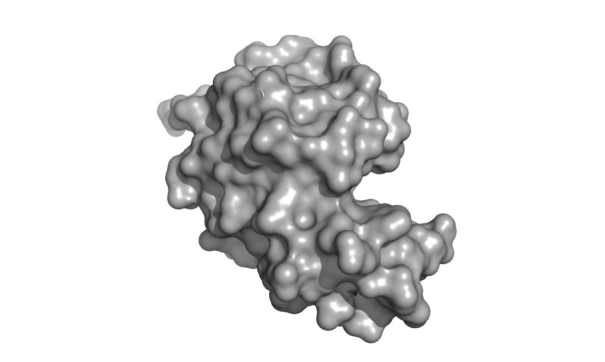
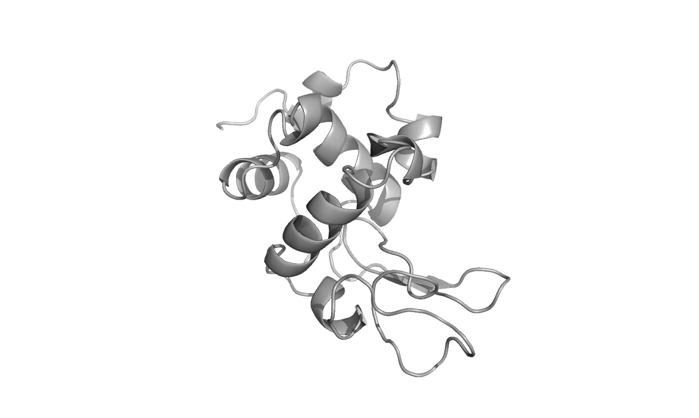
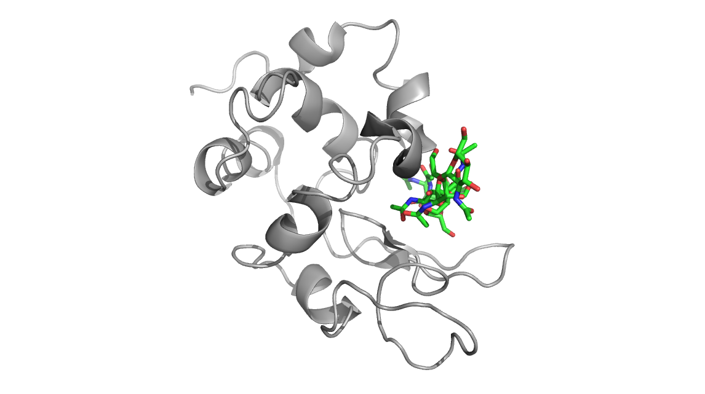
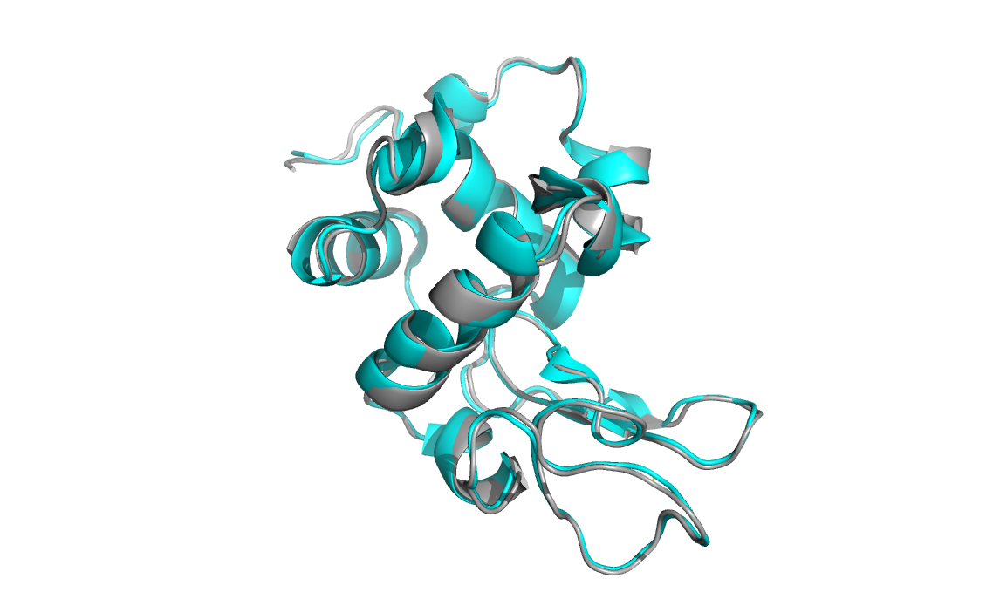

Lysozyme - antimicrobial enzyme part of the innate immune system
Lyzozymes are a family of enzymes that cleave (via hydrolysis)
peptidoglycans (polymers of sugar and amino acids). Because
peptidoglycan is a large component of bacterial cell walls, lysozyme
proteins can thereby act as an antimicrobial by destabilizing bacterial
cell integrity.

Above are three representations of egg white lysozyme (PDB: 193L and
PDB: 1SFG). Notice the large cleft on the right side of the protein.
This is where peptidoglycan (represented in green) inserts and is
positioned for catalytic hydrolysis (third image on right).
Lysozyme is found in many animal secretions, including: tears, saliva,
milk, mucus, and egg whites. It has been routinely used as a model
protein for many studies in biochemistry and structural biology in
large part due to the ease of isolation, thermal and pH stability, and
quantities available from egg whites. Its structure was the first of
any enzyme to be solved by x-ray crystallography techniques.
Below is a natural abundance 15N-HSQC of egg white lysozyme recorded on a 600 MHz NMR.
Here is a two-dimensional carbon HSQC spectrum of reductively
methylated egg-white lysozyme. The reductive methylation approach has
been used by crystallographers to occasionally improve the
crystallization properties of otherwise difficult to crystallize
proteins. The applications of this methylation technique also extend to
spectroscopic fingerprinting of conformational states. Each methyl
group gives rise to peaks in the spectrum that correspond to the
microenvironment of N-terminal amino groups and lysine amino groups in
proteins. Given that salt-bridges are often found in proteins to
stabilize key interactions, addition of a methyl probe allows us to
monitor salt-bridge stability, state (on-off), pH-dependence, and
global conformational changes in labeled proteins.
Cryo Electron Microscopy (Cryo-EM) is a technique that has been in the
news quite recently for its potential to impact the field of structural
biology. Cryo-EM has been used for some time for structural
determination of large proteins but for a long time, the technique
failed to achieve structural resolutions comparable to X-ray
crystallography / diffraction techniques. Large advances have been made
in Cryo-EM and it is now routinely being used to solve structures of
large proteins and their complexes. One limitation, however, has been
that Cryo-EM required that protein structures being investigated are
large. This limitation seems to have been broken, especially in the
case of Micro Electron Diffraction (MicroED), which can be used to
resolve small protein structures (such as lysozyme) with resolution
comparable to x-ray diffraction.
Below is a microED structure of lysozyme solved to 2.9 angstroms
(cyan, PDB: 3J4G) aligned to an x-ray crystallographic structure of the
same protein (grey, PDB:193L). The backbone structures are nearly
identical.
